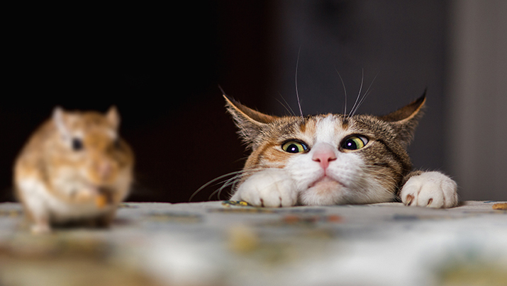

Where do we find our dogs?
Pet adoption usually refers to the process of taking guardianship of and responsibility for a pet that a previous owner has abandoned or released to a shelter or rescue organization. Common sources for adoptable pets are:
- Animal shelters, in the case of dogs also known as dog pounds
- Pets found loose or stray without identification, and which are unclaimed by any owner
- Advertisements placed by individuals trying to find a new home for their pet
- Pets that have been abused or neglected and have been confiscated from the offending owner.
Dogs adopted from shelters are often referred to as shelter dogs or pound puppies; dogs adopted from rescue organizations are often called rescued dogs or rescue dogs.